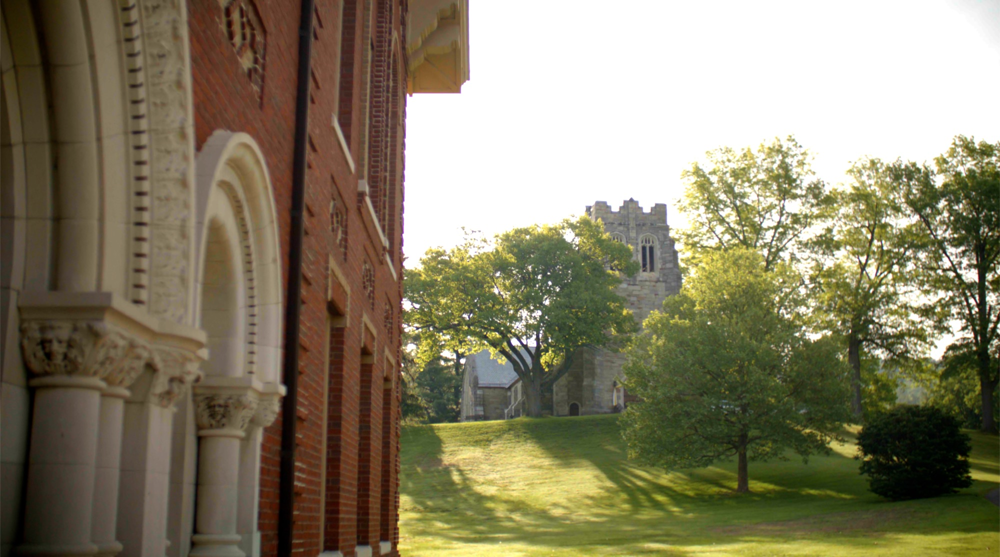
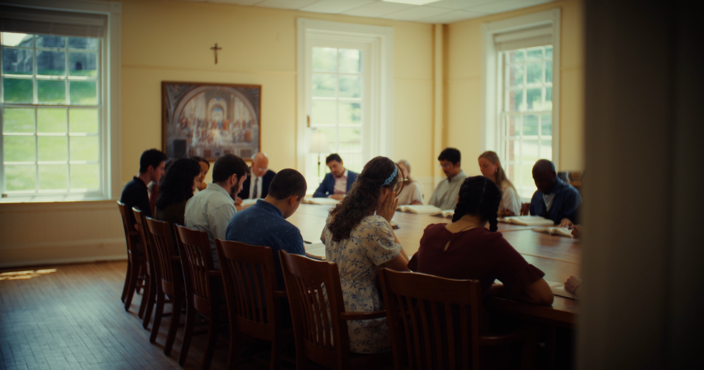
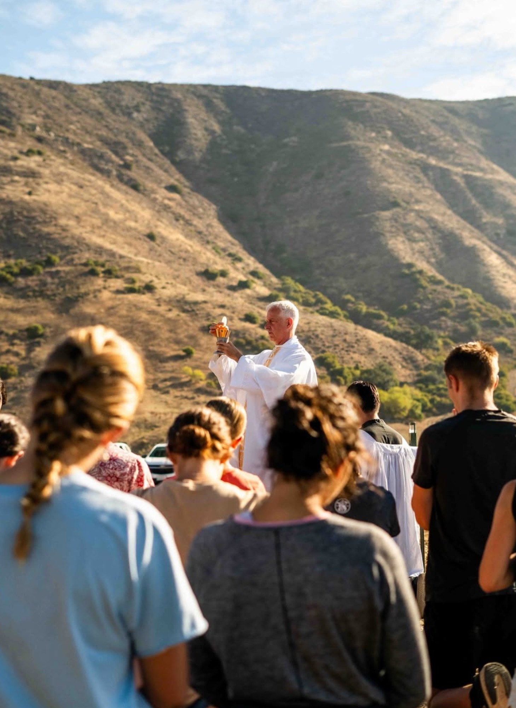
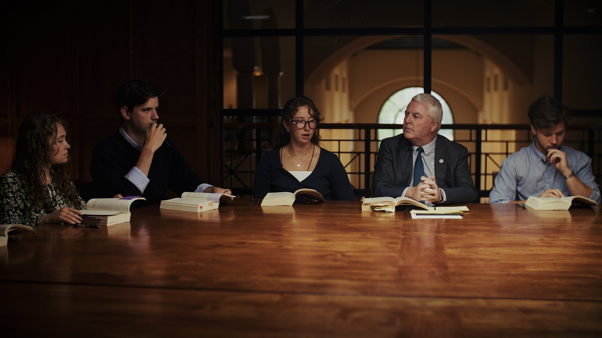
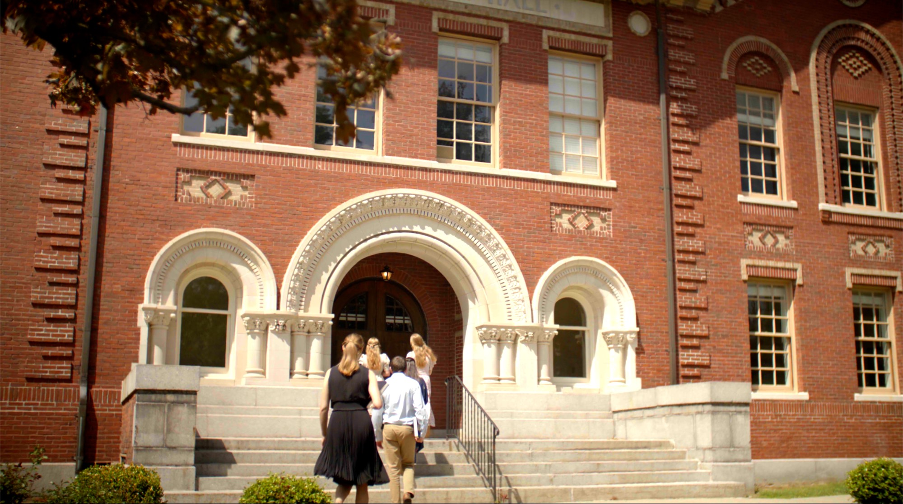
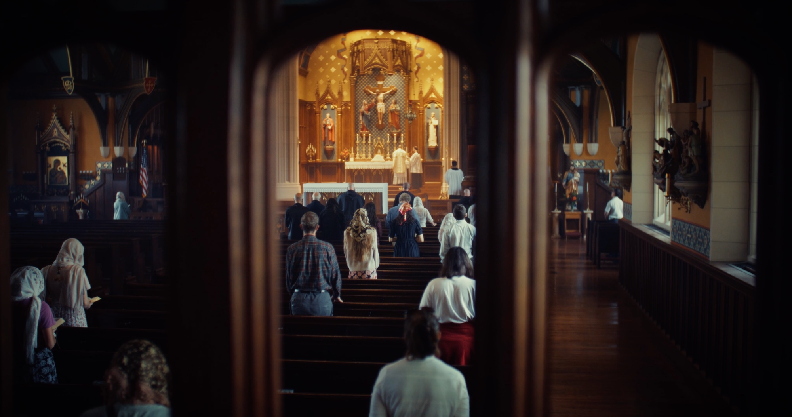
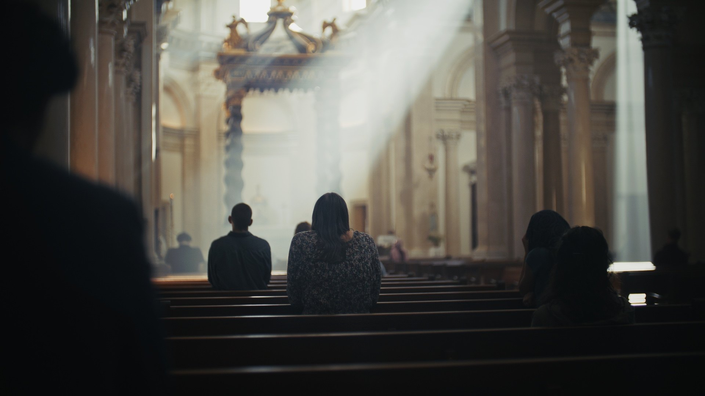
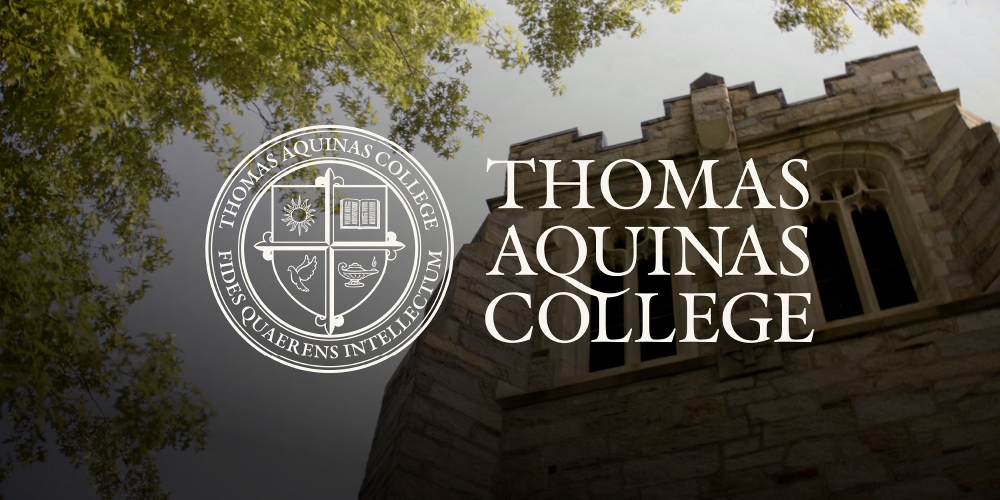

Northfield, Massachusetts
New England
Red brick and fieldstone in the hills above the Connecticut River.
Start here
Choose one to see what’s next.
Read the original works of Homer, Euclid, Augustine, and Newton — not summaries.
Small classes led by tutors who ask questions, so you learn how to think, not what to think.
Daily Mass, beautiful chapels, and a community that takes both reason and faith seriously.

“It’s small enough that you can be friends with everyone and you can become close in a way that you can’t at a bigger college. You find a lot of very close friendships.”
Nicolas Metilly, Class of 2029
Tell us about yourself — it takes a few minutes to begin.
We want to know how you think, not just what you’ve done.
An admissions counselor walks with you through every step, including financial aid.

Read great books, join real classes, pray in the chapel, and make friends who think deeply — before you ever choose a college.
Read and discuss the same authors TAC students do, in classes led by college tutors.
Live in our residence halls, attend daily Mass, share meals and evenings filled with conversation.
Go home with friendships, sharper thinking, and a clear sense of what college could be.

“The Summer Program changed my life. It made me realize the way I thought about things was wrong, and showed me a better way to seek the truth.”
Vitor Satcheki, Class of 2028 · Summer Program alumnus
Applying now? You’re a junior this year.
Rolling admissions. The first 30 accepted to each program save $200–$400.

IApply
Only the greatest books ever written, and a table of friends working together to understand them.
ApplyA financial aid program costing nearly $6 million a year makes attending affordable for nearly 70 percent of students.

IIVisit
Something about this place doesn’t fit in a brochure. Spend a day with us and you’ll understand.
Join a real discussion — no lecture, all conversation.
Eat with students and hear what it’s really like.
Join the community for daily Mass in the Chapel.
Ask anything — curriculum, aid, campus life.

Northfield, Massachusetts
Red brick and fieldstone in the hills above the Connecticut River.
Santa Paula, California
White stone and red tile in the foothills above the Santa Clara River Valley.

IIIGive
Your gift puts a student at the seminar table who could not otherwise be there — and makes this faithful education available for the next generation.

Give online
Every gift, of any size, helps a student take a seat at the table.
Secure giving through Blackbaud

“The important thing is that we find ways to make a quality, Catholic education available to those who seek it.”
Rev. Cornelius M. Buckley, S.J. · College Chaplain
